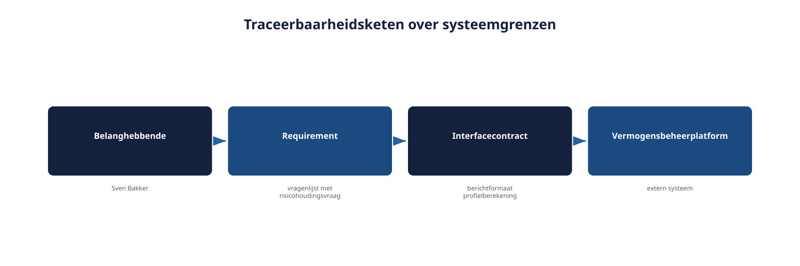
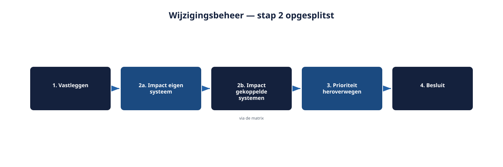

Deel 18 — Management: traceerbaarheid en impactanalyse
Slidedeck · Ductus-cursus Requirements engineering · niveau 2 · deel 18 van 22 · 22 slides
Slide 1 — Titel
Management: traceerbaarheid en impactanalyse
Cursus Requirements Engineering — Niveau 2, deel 18
Ductus
Slide 2 — Vandaag
- Traceerbaarheid over systeemgrenzen
- De cross-systeem traceerbaarheidsmatrix
- Impactanalyse over systeemgrenzen
- Impactanalyse op een niet-beheerd systeem
Slide 3 — Eén extra vraag in de vragenlijst.
Eén extra vraag in de vragenlijst.
Op het eerste gezicht: één extra scherm.
In werkelijkheid: een aanpassing bij het vermogensbeheerplatform, met een eigen doorlooptijd.
Slide 4 — 1. Traceerbaarheid over systeemgrenzen
Slide 5 — Figuur 18-1

Slide 6 — 2. De cross-systeem matrix
Slide 7 — Requirement, gekoppeld systeem, aard
| Requirement | Gekoppeld aan | Aard |
|---|---|---|
| Risicohoudingsvraag | Vermogensbeheerplatform | Berichtformaat |
| Bevestigingsscherm | KERN | Statusveld |
| Statusweergave | Mutatieplatform-rapportage | Gedeeld databronveld |
Slide 8 — Figuur 18-2

Slide 9 — Opdracht 18.1 — De matrix uitbreiden
Twee nieuwe rijen, intern of extern geclassificeerd.
Individueel · 15 minuten
Slide 10 — 3. Impactanalyse over systeemgrenzen
Slide 11 — Vijf stappen
- Matrix raadplegen
- Intern of extern vaststellen
- Intern: rechtstreeks contact
- Extern: formeel verzoek
- Matrix bijwerken — ook bij "geen impact"
Slide 12 — Figuur 18-3

Slide 13 — Opdracht 18.2 — Intern of extern, welke aanpak?
Vier wijzigingsvoorstellen.
Tweetallen · 20 minuten
Slide 14 — 4. Impactanalyse op een niet-beheerd systeem
Slide 15 — Drie regels
- Concreet en afgebakend vragen, niet "wat verandert er allemaal"
- Reken op een langere doorlooptijd — hun planning, niet de jouwe
- Documenteer, ook "geen impact"
Slide 16 — Figuur 18-4

Slide 17 — Opdracht 18.3 — Een formeel verzoek opstellen
Concreet, met redelijke reactietermijn.
Groepjes van drie · 25 minuten
Slide 18 — 5. Toegepast op Wegwijzer
Slide 19 — Svens voorstel, volledig doorlopen
- Matrix → gekoppeld aan vermogensbeheerplatform
- Extern
- Formeel verzoek gestuurd
- Antwoord: 6 weken doorlooptijd
- Teruggekoppeld aan prioritering (deel 17)
Slide 20 — Wat verandert er als je iteratief werkt?
- Vroege signalering: al bij backlog-refinement
- Een lichte "raakt dit een ander systeem?"-vraag per backlogitem
- Voorkomt late verrassingen bij een externe doorlooptijd
Slide 21 — Opdracht 18.4 — Checklist vroege signalering
Drie tot vijf vragen voor bij elk nieuw backlogitem.
Individueel · 15 minuten
Slide 22 — Vooruitblik
Volgende keer: deel 19
Wijzigingsbeheer, meten en rapporteren (twee dagdelen)
Spanningsveld 3 wordt afgerond.